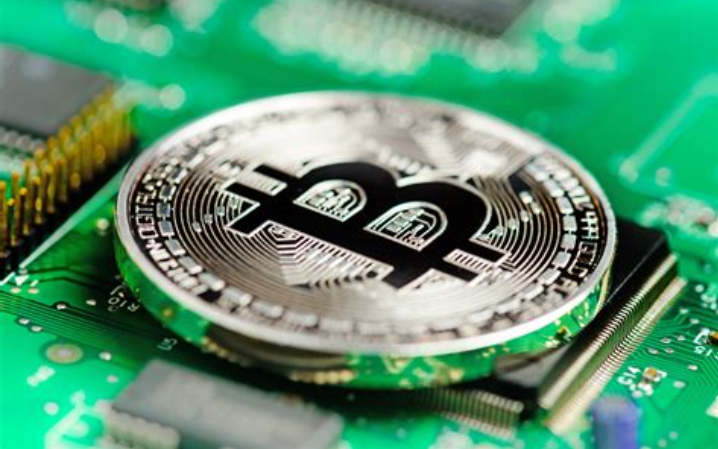

Introduction aux cryptomonnaies et à la blockchain

Introduction aux cryptomonnaies et à la blockchain
Les cryptomonnaies et la blockchain redéfinissent la finance et la technologie. Découvrez leurs concepts de base et leur impact croissant sur le monde moderne.
---
1. Qu'est-ce qu'une cryptomonnaie ?
Une cryptomonnaie est une monnaie numérique décentralisée fonctionnant sur une technologie appelée blockchain.
Exemples :
Bitcoin, Ethereum, Binance Coin.---
2. La blockchain : le cœur de la cryptomonnaie
La blockchain est un registre numérique distribué et sécurisé qui enregistre toutes les transactions.
Avantages :
Transparence, immutabilité et décentralisation.---
3. Pourquoi les cryptomonnaies sont-elles importantes ?
Elles offrent une alternative au système bancaire traditionnel.
Usages :
Paiements internationaux rapides, investissement, et financement décentralisé (DeFi).---
4. Risques associés aux cryptomonnaies
Bien qu'innovantes, elles présentent des risques.
Défis :
Volatilité des prix, régulations incertaines et cyberattaques.---
5. L'avenir des cryptomonnaies
Les cryptomonnaies continuent d'évoluer avec de nouvelles applications comme les NFT (Non-Fungible Tokens) et le Metaverse.
Tendances :
Adoption accrue par les entreprises et les gouvernements.---
Conclusion
Les cryptomonnaies et la blockchain transforment l'économie mondiale. En comprenant leur fonctionnement, vous pouvez mieux saisir les opportunités et les défis qu'elles présentent.